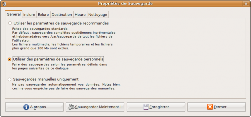

Avant de détailler ou d'expliquer quoi que ce soit, voici une question que vous vous êtes probablement posée.
Sauvegarder, oui ! Mais pourquoi ?
On pourrait se dire, de prime abord, que le risque d'incendie, de crash disque, d'endommagement du matériel, d'invasion de martiens (oups, je m'égare :-° ), bref, de tout ce qui pourrait rendre vos données corrompues ou inutilisables est minime !
On entend aussi souvent dire à ce sujet : "ça n'arrive qu'aux autres".
Ce serait sous-estimer le hasard et l'erreur humaine.
En effet, voici une liste non-exhaustive de causes possibles d'endommagement des données :
Incendie (je ne vous le souhaite pas...).
Erreur de votre part, lors d'une modification des partitions, par exemple.
Problème mécanique (comprennez "crash du disque").
Attaque par un pirate (risque réduit dans le cas d'une utilisation familiale du système).
Système rendu instable par une erreur de votre part (ou non).
Autres...
Vous le voyez, cela peut arriver pour de multiples raisons.
Il serait dommage de voir le fruit de son travail détruit par un coup du sort (travail de fin d'études tout particulièrement ).
De même, il serait regrettable de perdre ses données utilisateurs si vous étiez forcé de réinstaller votre distribution linux favorite pour je ne sais quelle raison :p
J'espère vous avoir convaincu que réaliser des sauvegardes n'est pas seulement utile mais est réellement indispensable !
Je vais maintenant détailler quelques stratégies qui permettent de s'en sortir.
Alors il faut savoir qu'il existe une certaine quantité de support sur lesquels on peut réaliser une sauvegarde.
Cela peut aller d'une clé USB, si on désire sauvegarder quelques images par exemple, au traditionnel disque dur externe, pour une sauvegarde plus importante, en passant par le serveur SSH distant.
Voici une liste non-exhaustive de différents supports :
Clé USB.
CD,DVD.
Disque dur externe.
Deuxième disque dur interne.
Serveur distant par FTP.
Serveur distant par SSH.
C'est bien beau tout ça, mais ce n'est pas gratuit !
Hélas non, tout a un prix... Mais posez vous plutôt la question suivante : "Est ce que mes données valent la peine que j'investisse un certain capital (ce n'est pas énorme non plus...) pour les préserver d'une quelconque altération" ?
Alors, chaque support comporte ses avantages et ses inconvénients.
On dit toujours que le meilleur support de sauvegarde est celui qui n'est pas accessible physiquement (prennez l'exemple de l'incendie, si votre disque dur externe y passe aussi, la sauvegarde n'aura servi à rien...).
Le cas des clés USB est particulèrement adapté si on désire sauvegarder un volume limité de données.
Le cas du disque dur externe prend son utilité grâce à sa capacité de stockage importante, qui permet de sauvegarder plusieurs configurations de systèmes ainsi que les données utilisateurs qui 'y rapportent.
Les CDs/DVDs, dans le même ordre d'idée que les clés USB, permettent de sauvegarder un volume limité de données quoi que plus important que celui proposé par ces dernières (bien que cela ne soit plus trop vrai au vu des capacités des clés USB récentes).
On va donc également s'interesser aux solutions de sauvegardes distantes.
Les deux solutions les plus courantes sont l'utilisation du FTP (pour File Tranfer Protocol) ainsi que l'utilisation du SSH (pour Secured SHell ).
Le SSH a été conçu pour combler certaines failles du FTP. Il est en effet bien plus sécurisé que ce dernier...
C'est pourquoi je ne détaillerai que l'utilisation du protocole SSH par la suite.
Le nec plus ultra étant, bien entendu, de faire des combinaisons des solutions énoncées ;)
Passons maintenant aux différents outils de sauvegarde.
Il existe différentes façons de sauvegarder ses données sous GNU/linux !
On peut utiliser des outils graphiques (qui s'appuient sur les lignes de commandes) ou directement utiliser ces dernières.
Je vais détailler ces deux méthodes en mettant toutefois l'accent sur la méthode faisant appel à la console.
Les outils graphiques
Tout d'abord, voici quelques outils graphiques qui nous seront utiles.
Parmi les logiciels avec interface graphiques, on distingue :
Arena_Backup
BackupPC
FullSync
SBackup
Autre...
Le point commun de ces logiciels est qu'ils sont relativement simples d'utilisation.
En général, il suffit de spéficier quel type de sauvegarde, quels dossiers sauvegarder, sur quel média les sauvegarder, à quelle fréquence et le reste du travail s'accomplit pour vous sans que vous n'ayez à vous en soucier (il faut toutefois faire attention à bien configurer les opérations, au risque de vous faire envahir de sauvegardes :pirate: )
Les outils en lignes de commandes
Voici maintenant une liste d'outil utilisant la console.
tar (le couteau suisse de la sauvegarde).
partimage, clonezilla, pour les images (les images .iso ou .img, pas les images du type .jpg ou .png :-° ) !
dump/restore (pour la sauvegarde incrémentale).
rsync, pour la synchronisation de répertoires.
dd, pour les sauvegardes physiques.
Il est maintenant temps que je vous explique les différents types de sauvegardes.
Les fichiers sont sauvegardés sans tenir compte d'une éventuelle sauvegarde antérieure.
Inutile de dire que cette sauvegarde est celle qui occupe le plus d'espace.
Pour cette raison, il est préférable de n'utiliser ce type de sauvegarde qu'épisodiquement.
Pour restaurer sa sauvegarde, il suffit d'utiliser uniquement les fichiers créés par sauvegarde complète.
La sauvegarde incrémentale
Cette sauvegarde examine le contenu de la dernière sauvegarde en date (peu importe son type). Elle compare cette sauvegarde avec l'état actuel du système et ne sauvegarde que ce qui a changé.
Évidemment, la taille occupée par cette sauvegarde est réduite étant donné qu'elle ne s'occupe que des modifications récentes du système.
C'est le type de sauvegarde qu'il faut appliquer journalièrement, du moins, régulièrement.
Pour restaurer son système, il faut restaurer la dernière sauvegarde complète puis toutes les sauvegardes incrémentales effectuées depuis, et dans l'ordre !
La sauvegarde différentielle
Fort semblable à la sauvegarde incrémentale, cette sauvegarde ne s'occupe que de ce qui a changé depuis la dernière sauvegarde complète.
Ici, pour restaurer le système, il suffit de restaurer la sauvegarde complète puis la dernière différentielle.
Stratégie de sauvegarde
Selon vos besoins, plusieurs stratégies me paraissent envisageables.
Il est nécessaire d'effectuer des sauvegardes complètes périodiquement, mais avec une fréquence assez réduite (une fois par mois, par exemple).
On doit combiner cela avec des sauvegardes incrémentales et différentielles plus fréquentes.
Pourquoi ne pas se contenter uniquement de sauvegardes complètes, à condition d'en effectuer régulièrement ?
Il est certain que si on désire se contenter de sauvegardes complètes, il faut en faire souvent (ce serait bête que survienne une panne la veille de la sauvegarde mensuelle, avouez).
Alors, ce type de sauvegarde prend un temps considérable comparé aux deux autres types.
Cela se comprend facilement étant donné le nombre important de données qu'il y a à écraser.
Se pose aussi le problème de la place.
Si vous faites des sauvegardes complètes, à moins que vous n'écrasiez vos sauvegardes antérieures, vous vous retrouverez rapidement avec l'entièreté de la capacité du média concerné saturée :p
Voilà pourquoi il est préférable d'effectuer une sauvegarde complète mensuellement et de la combiner à des sauvegardes incrémentales/différentielles plus fréquentes !
Je vais maintenant détailler le mode graphique et le mode texte permettant de sauvegarder vos précieuses données.
Dans cette section, je vais détailler l'utilisation d'un logiciel avec interface graphique simple d'utilisation : SBackup
Les autres logiciels s'appuient sur la même logique, c'est pourquoi il est inutile d'en détailler l'utilisation.
Pour installer SBackup, installez le paquet sbackup avec votre gestionnaire de paquets préférés.
Ainsi, sous Debian, on peut faire :
$ sudo aptitude install sbackup
Configuration de SBackup
Si vous utilisez GNOME, il vous faudra lancer Simple Backup Config via Système→Administration→Simple Backup Config.
Vous tomberez nez à nez avec un écran de configuration du logiciel qui devrait ressembler à ceci :

Vous pouvez donc utiliser les paramètres par défaut, définir une configuration personnalisée ou encore sauvegarder manuellement.
On va détailler une configuration personnalisée.
Onglet inclure
L'onglet suivant l'onglet général est : "inclure".
Il permet d'inclure les répertoires que vous souhaitez impérativement sauvegarder.
Voilà à quoi ça doit ressembler :
Alors, dans cet onglet inclure, je vous conseille de choisir :
/home (pour vos données utilisateurs).
/etc (les fichiers de configurations de votre système).
/root (le dossier du super utilisateur).
/var (stocke entre autres les logs de votre système...Utile quand ça ne va plus).
/usr/local (stocke les paramètres locaux pour les utilisateurs).
Onglet exclure
Cet onglet devrait ressembler à ceci :
Dans cet onglet, vous pouvez choisir d'exclure :
Certains répertoires (comme /tmp qui se vide à chaque reboot par exemple).
Certains fichiers, d'après leur extension (.avi,.iso,.mp3,etc...).
Certains fichiers, selon leur taille.
En effet, certains répertoires, certains types de fichiers ou certains fichiers dépassant une certaine taille peuvent ne pas être utiles à sauvegarder. C'est à cela que sert l'onglet exclure (vous ne vous en doutiez pas je parie ^^ ).
Onglet destination
C'est ici qu'on choisit quel support utiliser pour la sauvegarde.
Vous remarquerez qu'on peut choisir un support interne. Certes, cette solution protège de la suppression accidentelle mais est d'une inutilité absolue dans la plupart des autres cas.
Alors, dans cet onglet, indiquez le point de montage (/media/disk par exemple) du support physique voulu si vous utilisez une solution matérielle.
Dans le cas où vous voulez utiliser un répertoire distant (serveur SSH), précisez les paramètres adéquats. À moins que vous ne disposiez d'espace de stockage, il faudra vous en procurer dans le commerce, si vous comptez utiliser une telle solution du moins.
Onglet heure
Voilà à quoi devrait ressembler cet onglet :
Si vous choisissez une heure précise à laquelle le logiciel doit sauvegarder vos données, il est évident qu'il faudra que votre ordinateur soit allumé à cet instant là.
Enfin, choisissez le délai après lequel Simple Backup fera une sauvegarde complète.
Une précision s'impose: par défaut, Simple Backup ne sauvegarde que les fichiers modifiés depuis votre dernière sauvegarde. Les autres sont simplement ignorés. En revanche, il réalisera une sauvegarde complète - et donc aussi des fichiers non-modifiés - après le délai spécifié ici.
Onglet nettoyage
Cet onglet sert à préciser au logiciel quel type de nettoyage il doit appliquer, et ce, pour éviter que vos sauvegardes n'encombrent tout l'espace disponible, au fur et à mesure.
Vous pouvez et devez préciser au logiciel qu'il doit supprimer les sauvegardes trop vieilles ou incomplètes.
Suivant votre fréquence de sauvegarde, choisissez un nombre x qui définit la durée de vie de vos sauvegardes.
Pensez à prendre un nombre x supérieur à votre fréquence de sauvegarde complète (si les sauvegardes sont purgées tous les 10 jours alors que des sauvegardes complètes ne sont effectuées qu'une fois par mois, il est possible que vous tombiez dans un espace temps où vous ne disposez d'aucune sauvegarde ^^ ).
Si vous avez besoin de sauvegardes sur du long terme, choisissez l'algorithme de suppression logarithmique.
Une fois vos paramètres choisis, n'oubliez pas de cliquer sur enregistrer pour que votre configuration soit mémorisée.
Je crois que j'ai tout dit concernant ce logiciel, je vais donc maintenant détailler la solution en lignes de commandes.
J'ai détaillé divers outils en ligne de commandes, plus haut, je vais maintenant expliquer comment se servir de la commande tar.
Pourquoi tar ?
Il est vrai qu'il existe d'autres outils de sauvegarde en ligne de commandes, j'en ai parlé antérieurement.
Néanmoins, tar est un outil qui fait quasiment tout (à ma connaissance, il ne fait pas encore la vaisselle cependant :lol: ).
Il permet de sauvegarder une arborescence entière en la compressant pour en réduire la taille très simplement. Il permet, tout aussi simplement, de restaurer cette arborescence.
En raison de sa facilité d'utilisation et de ses possibilités, j'ai donc décidé de privilégier cet outil plutôt qu'un autre.
Présentation générale de tar
À partir d'un fichier archive, la commande tar est capable de restaurer des fichiers ou des arborescences de fichiers.
Cette commande peut aussi bien traiter un fichier ordinaire, une arborescence de fichier, un périphérique d'archivage local ou distant.
L'archive dans laquelle est assemblée la sauvegarde permet de conserver les droits relatifs aux fichiers ainsi que leur emplacements respectifs.
Bref, un véritable couteau suisse :p
On va maintenant voir comment s'en servir pour réaliser nos sauvegardes, mais je vous assure, il a encore d'autres possibilités.
Utilisation de tar pour la sauvegarde
La sauvegarde manuelle
La syntaxe générale de la commande tar est la suivante :
tar -paramètres opérande1(archive.tar) opérande2(cible)
Alors, si on désire par exemple sauvegarder le dossier personnel de l'utilisateur guest sur un disque dur externe monté sur /media/votre_media en conservant les chemins absolus et en profitant de la compression GNU des données on fera :
tar -cvzf /media/votre_media/home_de_guest.tar.gz /home/guest
Le paramètre -c indique qu'on veut créer une sauvegarde, le paramètre -v rend la commande un peu plus parlante (au moins, on sait ce qu'elle fait la petite cachottière :lol: ) et le paramètre -f signifie qu'on doit assembler l'archive dans un fichier.
Pour restaurer le répertoire home que l'on vient de sauvegarder, on se place d'abord dans /(racine), ensuite :
tar -xvzf /media/votre_media/home_de_guest.tar.gz home/guest
Le paramètre -x exprime qu'on extrait un fichier pour le restaurer.
Si on désire sauvegarder l'intégralité de son système, la marche à suivre est identique, à l'exception près que le dossier n'est pas /home/guest, mais uniquement /.
Si on veut regarder le contenu d'une archive.tar sans en extraire quoi que ce soit, on fait :
tar -tf /emplacement_archive/archive.tar
Le paramètre -t permet de lister le contenu de l'archive.
Si maintenant on s'aperçoit après création de l'archive.tar qu'on a oublié un fichier, on l'ajoute via :
tar -rvf /emplacement_archive/archive.tar /emplacement_fichier/fichier_a_ajouter
Le paramètre -r donne la possibilité d'ajouter un fichier à l'archive.
C'est pénible de devoir, à chaque sauvegarde, préciser quels dossiers sauvegarder manuellement, ya pas un autre moyen de le faire ?
Évidemment si :)
Il faut, pour cela, utiliser ce qu'on appelle un script bash et automatiser son lancement si nécéssaire via la crontab.
Je vous encourage d'ailleurs à utiliser la solution du script, elle permet de sauvegarder plusieurs dossiers à la fois en un seul clic !
Pratique si on préfère ne pas devoir spécifier manuellement quels dossiers sauvegarder à chaque sauvegarde.
J'en parlerai après, je vais d'abord expliquer comment réaliser une sauvegarde incrémentale au moyen de la commande tar pour information.
La sauvegarde incrémentale avec tar
On va pour cela utiliser la commande touch. Imaginons qu'on veuille sauvegarder les fichiers modifiés (ou créés) après le 29 juillet à 00h05.
La première commande va créer un fichier caché nommé comparaison qui servira de base pour comparer. Les paramètres à indiquer à la commande touch font croire au système que vous avez créé le fichier .comparaison le 29/07 à 00h05.
Ensuite, au moyen de la commande find, on compare la date de création du fichier comparaison avec le reste du système, et tout ce qui a été créé ultérieurement au fichier .comparaison (tel qu'on a falsifié sa création ^^ ) est envoyé à la commande tar, au moyen du pipe "|", qui se charge de la sauvegarde.
Pratique non ?
On sait maintenant comment réaliser une sauvegarde complète de tout le système, une sauvegarde incrémentale de tout le système. On va voir comment automatiser ces actions au moyen d'un script !
Création d'un script bash de sauvegarde complète
J'espère que vous avez lu la fin du tutoriel de M@teo21 où est expliquée la structure des scripts bash, afin que vous comprenniez la construction de celui qui va suivre.
Plutot que de vous expliquer ligne par ligne, je vais vous livrer un script où les lignes seront commentées dedans même.
Voici d'abord un script qui sauvegarde les dossiers que vous lui avez spécifiés dans une archive backup.tar.gz sur le support que vous aurez choisi.
#!/bin/sh
# Enregistrez ce script sous le nom de backup.sh. Prennez note de son emplacement.
echo "------------------------------------------------------";
echo "- Sauvegarde complète du système";
echo "------------------------------------------------------";
echo "";
echo "Création de l'archive";
# On crée l'archive .tar en précisant entre guillemets les chemins absolus des dossiers à sauvegarder.
tar -cvzf /votre_support/backup.tar.gz "/etc/" "/root" "/home" "/var" "/usr/local"
echo "------------------------------------------------------";
echo "";
echo "Vérification de l'existence de l'archive";
# On teste si l'archive a bien été créée
if [ -e /votre_support/backup.tar.gz ]
then
echo ""
echo "Votre archive a bien été créée.";
echo ""
else
echo ""
echo "Il y a eu un problème lors de la création de l'archive.";
echo ""
fi
echo "### Fin de la sauvegarde. ###";
Ensuite, un script qui va chercher l'archive précédemment créée, qui en extrait l'intégralité des fichiers/répertoires et qui les replace à leur emplacement initial.
#!/bin/sh
# Enregistrez ce script sous le nom restore.sh. Prennez également note de son emplacement.
echo "------------------------------------------------------";
echo "- Restauration du système";
echo "------------------------------------------------------";
echo "";
echo "Récupération et extraction de l'archive";
# On se place à la /(racine), comme je l'ai expliqué tout à l'heure.
cd /
# On extrait les répertoires archivés en ne mettant PAS le / devant, comme expliqué tout à l'heure.
tar -xvzf /votre_support/backup.tar.gz "etc" "root" "home" "var" "usr/local"
echo "------------------------------------------------------";
echo "";
echo "### Fin de l'extraction des fichiers. ###";
Vous connaissez la manoeuvre à appliquer sur ces deux scripts pour les rendre exécutables.
Un petit coup de :
chmod +x backup.sh restore.sh
Et le tour est joué ^^
Ce serait un bon exercice que de créer un script permettant de sauvegarder incrémentiellement ses données tous les jours et de les sauvegarder complètement une fois par mois !
Ensuite, je vous laisse le soin de créer un éventuel lanceur sur votre bureau pour éviter de devoir répéter l'opération qui consiste à se placer dans le dossier où est enregistré le script et à l'exécuter.
Ce qui se fait via les commandes suivantes :
cd /dossier_du_script
./votre_script.sh
Automatisation des tâches
Si, comme moi, ça vous dérange encore de devoir cliquer pour sauvegarder vos données (on peut oublier de le faire, aussi...) alors il va falloir automatiser tout cela via la crontab.
Je ne vais pas vous la décrire dans le détail, pour cela, repportez-vous au tutoriel de M@teo21.
Bon, dans un console, lancez :
crontab -e
Et choisissez 3 pour Nano, à moins que vous ne préfériez Vim ou emacs (si vous l'avez installé).
Votre écran devrait ressembler à ceci :
GNU nano 2.0.7 Fichier : /tmp/crontab.4u4jHU/crontab
# m h dom mon dow command
[ Lecture de 1 ligne ]
^G Aide ^O Écrire ^R Lire fich.^Y Page préc.^K Couper ^C Pos. cur.
^X Quitter ^J Justifier ^W Chercher ^V Page suiv.^U Coller ^T Orthograp.
Rajoutez une ligne comme celle-ci, pour que vos sauvegardes soient effectuées tous les lundis à 19h30 par exemple.
30 19 * * 1 cd /dossier_où_est_enregistré_backup.sh | ./backup.sh
Enregistrez votre fichier via Nano, la crontab vous informe de la prise en compte des changements et le compte est bon.
Cas du serveur distant par SSH
Alors, je n'ai pas encore trop parlé de la sauvegarde distante sur un serveur par SSH.
Je ne vais pas vous expliquer ici comment fonctionne la synchronisation sur un serveur par le protocole SSH, ce n'est pas le but du tuto.
Sachez que si vous désirez sauvegarder vos données sur un serveur distant, le mieux est encore de créer son archive.tar.gz, de la stocker localement (sur votre disque même ou sur un disque dur externe) et d'ensuite l'envoyer via SSH sur votre serveur distant.
Tenez, voici un exemple pratique. On souhaite envoyer l'archive backup.tar.gz sur son serveur via le protocole SSH.
Il faut pour cela utiliser un client SSH !
Je vous recommande d'utiliser SCP (pour Ssh CoPy) qui s'utilise comme la commande cp (installation classique via le gestionnaire de paquets).
Il est évident qu'il faut au préalable s'identifier avant toute transaction avec le serveur.
La commande suivante permet de se connecter au serveur, moyennant l'entrée de votre mot de passe (il ne s'affichera pas lorsque vous le rentrerez, comme d'habitude en console) :